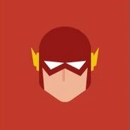
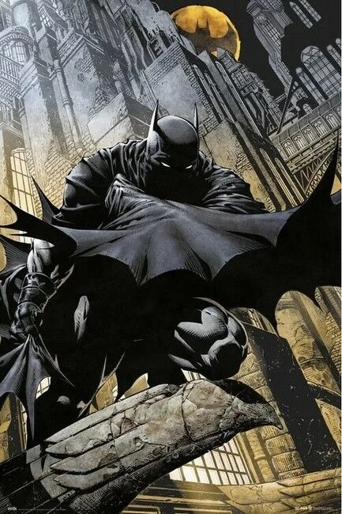
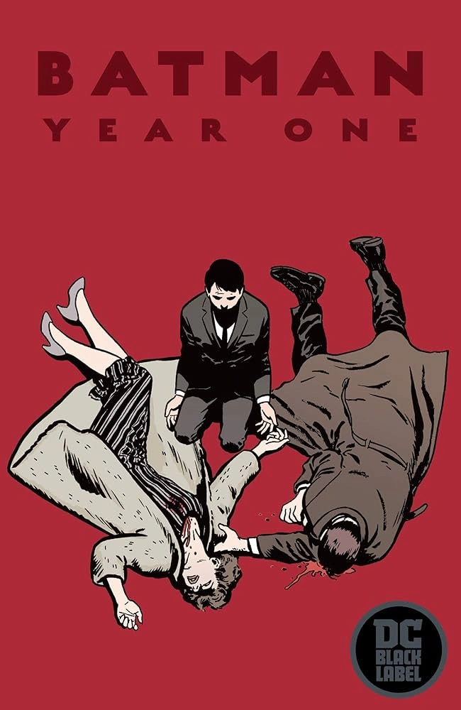
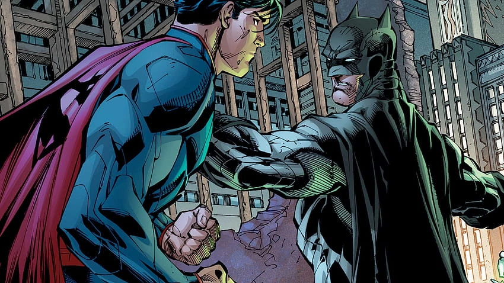
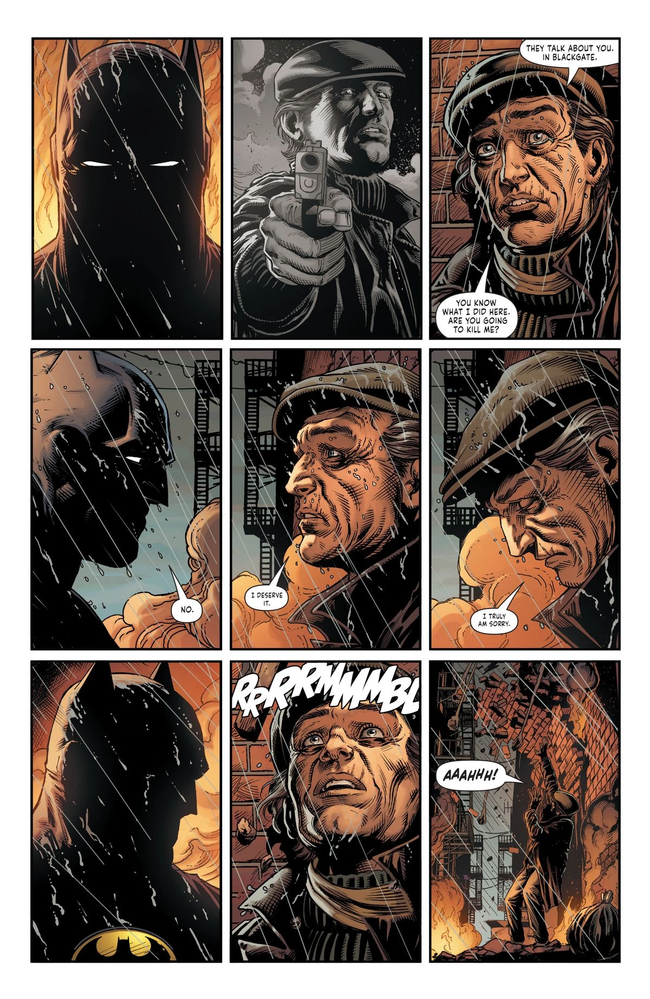

"Dreams save us. Dreams lift us up and transform us."
Superman (Clark Kent / Kal-El)
"A hero can be anyone. Even a man doing something as simple as putting a coat around a young boy’s shoulders to let him know the world hadn’t ended."
Batman (Bruce Wayne)
 "I will fight for those who cannot fight for themselves."
"I will fight for those who cannot fight for themselves."
Wonder Woman (Diana Prince)
"You can’t foresee all the consequences of your actions. But that’s no excuse to do nothing."
Green Lantern (Hal Gordan)

"Sometimes the only way to move forward is to revisit the things in your past that were holding you back."
The Flash (Barry Allen)
"The future is worth it. All the pain. All the tears. The future is worth the fight."
Martian Manhunter (J’onn J’onzz)
BATMAN

One of the most iconic fictional characters in the world, Batman has dedicated his life to an endless crusade, a war on all criminals in the name of his murdered parents, who were taken from him when he was just a child. Since that tragic night, he has trained his body and mind to near physical perfection to be a self-made Super Hero. He's developed an arsenal of technology that would put most armies to shame. And he's assembled teams of his fellow DC Super Heroes, like the Justice League, the Outsiders and Batman Incorporated.
A playboy billionaire by day, Bruce Wayne’s double life affords him the comfort of a life without financial worry, a loyal butler-turned-guardian and the perfect base of operations in the ancient network of caves beneath his family’s sprawling estate. By night, however, he sheds all pretense, dons his iconic scalloped cape and pointed cowl and takes to the shadowy streets, skies and rooftops of Gotham City.
He is vengeance. He is the night. He is Batman.
BATMAN'S ORIGIN

Young Bruce Wayne was a child of privilege, raised under the watchful eye of his parents, Thomas and Martha, in the upper echelons of Gotham City’s high society. Far removed from the city’s slow descent into corruption and chaos, Bruce enjoyed a carefree childhood with the promise of a bright and easy future, in which his family’s name and fortune would see to it that he would never want for anything.
But fate intervened before that future could ever become a reality. One night, after the Waynes exited a movie theater in one of Gotham’s rougher neighborhoods, they were caught in a mugging that left both Thomas and Martha shot dead before Bruce’s eyes. Suddenly orphaned, Bruce was left in the care of his family’s butler, Alfred Pennyworth, as he fought to survive in a world where the rules as he understood them no longer made sense.
Bruce slowly turned his grief into fuel for a lifelong obsession. Instead of succumbing to self-destruction, he swore an oath to “war on all criminals” for the rest of his life, to prevent the tragedy that occurred to him from happening to anyone else in Gotham. Inspired by the bats that infested his family’s property, and his lifelong fear of them, he took on the identity of Batman, the hero that Gotham—and the rest of the DC universe—needs. Summoned to action by the glow of the Bat-Signal, a floodlight used by his ally Commissioner Jim Gordon of the Gotham City Police Department, Batman watches over his domain as a vigilant protector and stalwart Dark Knight.
BATMAN'S POWERS AND ABILITIES

Batman does not have any metahuman abilities. Instead, he relies on his sharp mind and disciplined body, as well as his extensive combat and detective training. A master of virtually every form of martial arts, a brilliant tactician and a genius-level forensic scientist, Bruce also has access to his family’s fortune, which he’s used to create a near-limitless supply of advanced technology for his war on crime.
Housed in the Batcave beneath Wayne Manor is an armada of specialized Batmobiles and Batplanes, troves of weaponry and armor and the Batcomputer, a supercomputer that links Bruce’s technology across the globe and beyond.
Batman prides himself on being prepared for any emergency. He’s devised various fail-safes and plans for any number of potential doomsday scenarios. As the sometime leader of the Justice League and the patriarch of the Batman Family, he’s more than ready to take on whatever the universe throws at him. Armed with a utility belt full of Batarangs, a Batsuit loaded with cutting-edge technology and his own hair-trigger reflexes, Batman is ready to strike fear into the hearts of criminals everywhere.
